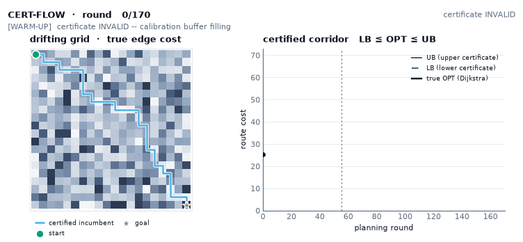
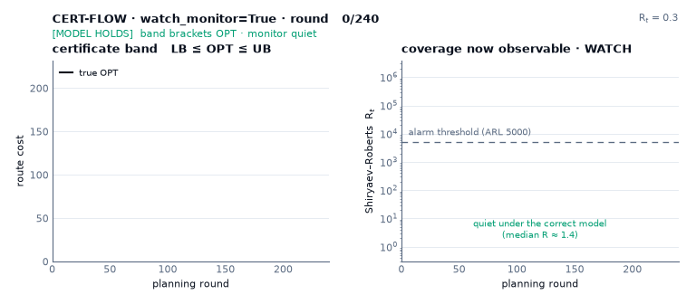
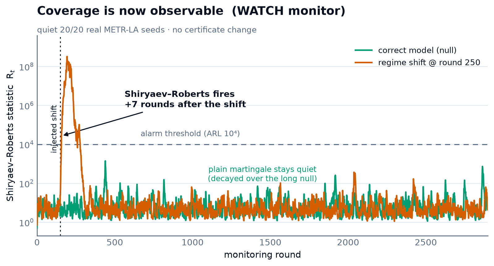
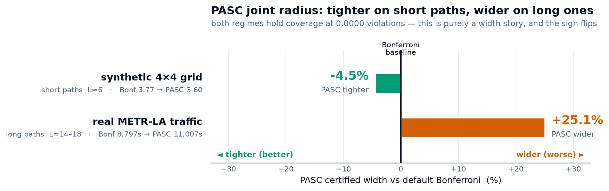

A robot routing through terrain whose costs drift — mud after rain, traffic after an incident — can't answer the one question that matters: how good is my route, now that most of the map is stale? CERT-FLOW answers it every round, with a proof, and spends sensing exactly where the proof is loosest.
250 testscoverage 1.000 measured2 real cities + off-roadT1–T7 provenMIT
The problem
Classical replanning never tells you when to stop trusting the map.
A scout vehicle maps a forest trail in winter; by summer the mud is gone and the costs have moved. A delivery robot's street graph drifts with every incident. D* Lite, A*, and friends re-find the shortest path on whatever costs they currently hold — silently, whether those costs are fresh or hours stale. The route looks optimal and may not be, with nothing to flag it.
The honest question is a certificate question: bound the true optimum from both sides, act only on what you can prove, and when the bound is too loose, spend a sensor reading exactly where it tightens fastest.
How it works
One round: price staleness, bound the optimum, sense the gap.
Each edge carries a point estimate, an observation age, and a drift-rate bound. Age-weighted non-exchangeable conformal prediction turns these into intervals that widen with staleness; two incremental searches bracket the optimum from below and above; the certificate either certifies (gap ≤ ε) or points the next sensor reading at the edge that shrinks the gap fastest. When the certificate proves the map is tight, that proof licenses lookup-speed preprocessing — revoked the instant drift exceeds tolerance.
One CERT round, end to end — paid observations feed the conformal scorer; per-edge intervals bracket the optimum via dual incremental search; the certificate drives sensing; a proof of tightness gates preprocessing.
01 · score
Drift-adjusted residuals
Each paid observation is scored and weighted by age — exchangeability is never assumed.
02 · price
ĉ ± (λq + ρ·age)
The conformal quantile pays for noise; the drift term pays for staleness.
03 · bound
Dual incremental search
An optimistic ℓ-search and a conservative u-search, repaired incrementally on a flat-array engine.
04 · claim
LB ≤ OPT ≤ UB
At an honestly-annealed confidence that degrades visibly as the map ages — weak claims, not silence.
05 · sense
Shrink the certified gap
Route-critical, churn-aware sensing — certification is a rate, not a state (Theorem T2′).
06 · prove → cache
Gated preprocessing
When every interval is provably tight, an oracle / certified CH answers in ns–µs, revoked once drift exceeds τ.

The whole loop, live — real planner, 20×20 drift grid, 170 rounds.Left: true edge costs (heatmap), the certified incumbent path, and the gap-directed edges the planner pays to sense each round. Right: the certified corridor grows round by round — warm-up (certificate invalid) → valid (LB ≤ OPT ≤ UB brackets the true optimum, drawn inside) → drift moves the costs → sensing holds the band. Coverage over the valid rounds is 115/115 against exact Dijkstra. Regenerated by scripts/viz_gen/certified_corridor.py.
See it move
The certificate that holds — and the ones that break.
Every clip replays a real run; the coverage and regret numbers are measured at render time, not staged (warm-up rounds are drawn as “no claim”, never counted as misses). A note on honesty: on a known static map every planner finds the same optimal path — so these show what actually differs under drift: certificate validity and sensing efficiency.
Certificate holds vs. breaks — drifting grid
CERT's band contains the true optimum on every round it claims; AD*'s w-suboptimality band, trusting stale point estimates, drifts out of date.
coverage ↑CERT 100%AD* 43%
Same story, real MovingAI map
Certificate validity on benchmark game-map geometry (DAO arena) under bounded drift — the result transfers off the synthetic grid.
coverage ↑CERT 100%AD* 42%
Sensing that pays — unknown terrain
Gap-directed sensing converges near a clairvoyant oracle; random / max-age / drive-blind wander at the same budget (mean over 15 seeds).
regret ↓CERT 1.96others 4.9–7.8
Sensing that pays — real arena map
The same regret race on a cropped MovingAI arena: gap-directed sensing reaches the goal at the lowest travel-regret of any policy.
regret ↓CERT 1.71 (lowest)
Exchangeability collapse under staleness — METR-LA traffic
Exchangeable conformal (CIA, run with its own construction on the same city) covers on the static slice it assumes, then collapses as the calibration→test gap grows; CERT widens its interval to keep coverage. The price is paid in width, explicitly — never in coverage.
coverage ↑CERT 0.96–1.00CIA 0.88 → 0.25width ↓ = CIA frozen 53 s · CERT widens to stay valid
Rendered by scripts/viz_compare.py + the visualization suite — reproducible like every number on this page.
Where it stands
Best-in-class where it counts — and honest about the rest.
↑ higher better
1.000
certificate coverage, every condition — two real cities at up to 49% drift-model violation
↓ lower better
−0.12
travel-regret in unknown drifting terrain — statistically at a clairvoyant oracle
↓ lower better
269 ns
certified static query via proof-gated preprocessing (8.7 µs for a full path)
↓ lower better
0.015 ms
road cost-change absorption vs ≈ 1 s for CRP recustomization — four orders faster
property →
drift-aware intervals
path-cost certificate
online incremental
gap-directed sensing
D* Lite / AD*
✕
✕
✓
✕
Conformal sums (CIA, CQR-GAE)
✕
✓
✕
✕
TASP / FreMEn
✓
✕
✕
✕
CTP + sensing / IPP
✕
✕
✕
✓
🏆 CERT-FLOW
✓
✓
✓
✓
Every prior family misses at least two of the four properties whose conjunction CERT occupies. All per-condition numbers — marked ↑/↓ and ranked best→worst — are in docs/results.
The 2026 layer · opt-in
Coverage you can watch — not just claim.
A certificate pinned at coverage 1.000 hides an awkward truth: the claim was untestable. The 2026 layer turns it into a live, alarming quantity — a WATCH conformal test-martingale and a Shiryaev–Roberts change-detector run alongside the planner and fire the moment the staleness model the proof leans on actually breaks. Every piece is off by default, a config flag or a new class, and touches no certificate: the (LB, UB, confidence) stream is byte-identical on or off.

Watch it fire. The real planner with watch_monitor=True on a grid whose costs surge mid-run (the regime break from tests/test_live_wiring.py). Left — the band brackets the true optimum under the correct model; at the jump the optimum briefly escapes the band still priced off stale, cheap observations (vermillion) — the silent staleness the monitor exists to surface. Right — the Shiryaev–Roberts statistic crawls flat (median R ≈ 1.4) then explodes past its alarm threshold ~6 rounds after the jump, at zero cost to the certificate. Regenerated by scripts/viz_gen/watch_alarm.py.

The layer on real METR-LA (20 seeds × 288 rounds).Left — the joint PASC radius lands +25.1% wider than the default per-edge Bonferroni, both at 0.0000 violations: long optimistic paths starve the block quantile, so PASC stays experimental and Bonferroni stays the default. Right — soundness is now observable: the Shiryaev–Roberts monitor is quiet on 20/20 real replay days and catches an injected regime shift ~7 rounds later, at zero cost to the certificate.
real METR-LA
0.0000
coverage violations, every mode — 20 seeds × 288 rounds against the recording's true costs
validity monitor
20/20
replay days quiet — WATCH martingale + Shiryaev–Roberts, zero false alarms
honest negative
+25.1%
PASC width vs Bonferroni on real traffic — opposite of its synthetic-grid win; kept experimental
cost to certificate
0
the monitor is purely observational — identical (LB, UB, confidence) stream, on or off

PASC — both truths, one chart. The joint per-edge radius is −4.5% tighter on the short-path synthetic grid (L≈6) and +25.1% wider on long real-traffic paths (L≈14–18), both at 0.0000 violations: purely a width story whose sign flips with path length. This is why Bonferroni stays the default and PASC keeps its experimental flag — the honest negative, kept.
soundness HOLDS on real datano certificate changePASC wider on real paths
Wired behind PlannerConfig(watch_monitor=True) and path_calibration="pasc", read live via planner.diagnostics(); full write-up in docs/results/live-wiring-2026.md. The program's meta-lesson, kept honest: the soundness layer survives real data; the width-tightening claim does not.
The verdict scoreboard
Where it wins — and where it doesn't.
One honest table, every number traced to a committed result doc. Plain verdict words; the FAIL and WEAK rows stay in.
Area
CERT-FLOW
Best alternative
Verdict
Coverage under real drift
1.000 coverage, every condition
AD*/ARA* 0.02–0.07 valid (real METR-LA)
PASSdecisively better — validity is the axis a route certificate lives on
vs CIA (closest conformal)
holds 0.95–1.00 at every staleness gap
CIA collapses 0.95 → 0.20 under staleness
PASSon validity — honest cost: up to ~49× wider at 24 h
Interval tightness
valid but 1–2 orders wider; PASC +25.1% on real traffic
AD*-semantics intervals narrow (but invalid)
WEAKhonest negative — soundness costs width
Sensing
objective-matched hybrid regret −0.12 ≈ oracle; pure gap-directed 2.35
CTP-RS-style VOI 0.48
GOODFAILhybrid wins and carries a certificate VOI lacks; pure gap-directed beaten ~5×
Static-grid / continental speed
1.5 ms scratch · 3.7 ms per certified round
JPS+ ~4 µs · Hub Labels 0.56 µs
FAIL1000–10000× slower — out of scope by design
Bounded cost-change absorption
0.015–0.34 ms
CRP ~1 s recustomization
PASSorders faster on the "costs moved, keep planning" operation
Observability (WATCH / SR)
quiet 20/20 real seeds; injected shift caught in ~6–7 rounds
no competitor ships this
PASSnovel — coverage is now a live, alarming quantity
MIXEDadditive ports; joint falsified on real METR-LA
Read it straight: CERT-FLOW wins soundness and observability decisively, is honest about width (wide-and-sound beats narrow-and-wrong on stale maps, but it is wide), and loses on static-map raw speed by design. Sources: docs/results/ — extern-baselines, cia-comparison, published-speed-comparison, live-wiring-2026, multiagent.
The theory
Seven results — including a proof that the design is optimal.
T1a / T1bCoverage at the claimed level — for observable costs, and for latent costs at a doubled margin.
T2′ — certifiability thresholdA target gap ε is sustainable iff the sensing rate beats drift. Certification is a rate, not a state (proven both directions).
T4 — sum-aware certificateA √L-tighter upper bound, with the selection-bias hazard it creates and the freshness gate that controls it.
T5 — impossibilityNo uniform lower bound beats Bonferroni by more than log factors. The certificate's asymmetry is provably optimal.
T6 — decision-uniform validityValidity over exactly the rounds a policy acts on — α-spent where the trajectory consumes it.
T7 — churn-measured floorFocused sensing suppresses path churn rather than chasing it; the floor uses the measured churn set.
Full statements + proofs in the theory companion (paper/theory.tex); working notes in docs/theory.
Honest boundaries
What it does not win — stated plainly.
A certificate is only as trustworthy as its author's honesty about the edges. These are measured, documented, and shipped alongside the wins.
Static, known maps
On a frozen, fully-known graph, optimized planners (Hub Labels, CH) answer in microseconds and CERT shouldn't be used — its value begins only when costs drift. CERT reaches that speed class only through proof, when the certificate says it's safe.
Age-weighting alone
On a bare residual stream, our age-weighted quantile ties fixed-weight NexCP — the real edge over exchangeable conformal is the explicit ρ·age drift term and the sensing loop, not the weighting. Reported, not buried.
Single-corridor mazes
Where there is only one route, route-critical sensing provably cannot help — confirmed by a maze negative control. The claim's boundary, not a defect.
Real off-road drift (FoMo)
On a full year of forest-trail traversal costs, path-level coverage holds at 1.000 but the marginal edge guarantee strains slightly (0.87 vs 0.90) — real winter→summer shifts are harsher than bounded synthetic drift. An honest datapoint, not a perfect one.